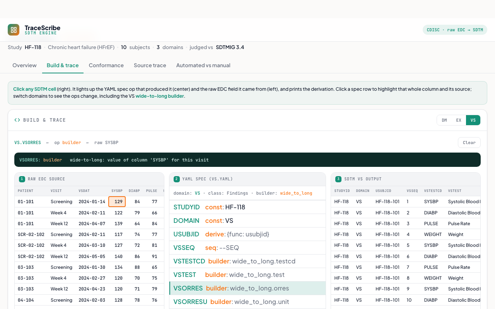

SDTM Engine
One declarative YAML spec per domain turns a raw EDC export into a CDISC SDTM package: data, mapping spec, and Define-XML from a single source of truth, judged against SDTMIG 3.4 + CDISC CT, never a vendor template. Every mapped value traces to a real collected field; nothing is fabricated. Proven on a real multinational study, it builds the analysis-critical science correctly, and is honest about the supportive scaffolding that is still mechanical to finish.
What it does
Building the CDISC SDTM datasets from a raw EDC export is the clinical deliverable most sponsors outsource. This engine does it from one declarative YAML spec per domain. The spec drives both the data build and the rendered mapping spec, so the data and its documentation cannot drift, and conformance is judged against bundled SDTMIG + CDISC controlled terminology rather than a vendor package. Distinct from the CDISC Submission Pipeline: this is the spec-driven mapping engine, traceable to the raw field, not double-programming reconciliation.
How it works
- Spec-driven build: a small op vocabulary (const, copy, ct for controlled terminology, dtc for ISO-8601 dates, derive for identifiers and ages, seq for --SEQ) plus reshaping builders for the hard cases. The demo runs a minimal interpreter of that vocabulary live in the browser over a synthetic raw EDC, including a wide-to-long builder that turns one wide vitals form per visit into one SDTM record per measurement.
- Click-traceability: on the Build & trace tab, click any SDTM cell and it lights up the YAML spec op that produced it and the raw EDC field it came from, with the derivation printed. That is the engine's core principle made visible: every value traces to a real collected source.
- Never fabricate: a required variable with no collected source is emitted as an honest pending blank, and a not-collected reading produces no row, rather than an invented value. A partial (year-only) birth date yields a blank age, not an estimate.
- Standards-judged conformance: SDTMIG + CDISC CT checks run live on the built data (CT codelists, date formats, uniqueness, required-variable presence), with an opt-in path to external CDISC CORE for an independent validation pedigree.
- Source-trace report: every variable tagged auto (matched / derived / constant), review (verify the pattern), or todo (no source). Roughly 90% auto on this synthetic build.
- Automated vs manual: the science-vs-scaffolding scorecard. The engine column is computed from the build; it nails the analysis-critical science (identifiers, dates, controlled terminology, reshaping, no fabrication) where a manual build commonly slips, and is explicit about the mechanical gaps that remain (supportive variables, dictionary coding, breadth).
A from-scratch demo built from a spec-driven SDTM engine. Synthetic seeded study and raw EDC; every value is computed in the browser with an in-page self-test that reconciles the build, file://-safe with no network calls. Takes ?tab= (overview, build, conformance, trace, compare) and ?still=1. No real subjects, no sponsor data.

Static preview - click to open the live, interactive demo